PENERPAN METODE SCRUM PADA SISTEM INFORMASI SEKOLAH MENENGAH PERTAMA PANCASILA

5200411476 Risky Devandra Hartana
5200411477 Robi Ardiansyah
5200411478 Cipta Andika Putra Pratama
5200411479 Cornellius Agova Madu Putera
5200411480 Faris Yudhika Ardana
PROGRAM STUDI INFORMATIKA
FAKULTAS SAINS & TEKNOLOGI
UNIVERSITAS TEKNOLOGI YOGYAKARTA
2020/2021
BAB I
Pendahuluan
1.1 Latar Belakang Masalah
Pada saat ini perkembangan teknologi informasi dan komunikasi (TIK), khususnya teknologi komputer sudah sangat mempengaruhi berbagai bidang kehidupan, baik dibidang ekonomi, sosial, budaya, maupun pendidikan. Salah satu produk teknologi yang popular adalah teknologi website.Teknologi internet dapat memudahkan untuk mengakses data dan mencari berita maupun informasi secara online. Pemanfaatan teknologi informasi berbasis website tidak hanya dimanfaatkan oleh perusahaan ataupun pemerintahan. Namun sudah mulai menjadi kebutuhan mendasar dalam pemanfaatan media informasi online berbasis website ini dimanfaatkan di dunia pendidikan. Hal ini dapat dilihat dari hampir sekolah tingkat menengah pertama maupun atas sudah mempunyai website. Karena sangat memudahkan para calon peserta didik baru untuk mencari informasi dan melakukan pendaftaran secara online.
SMP Pancasila terletak di wilayah Kecamatan Banguntapan, Kabupaten Bantul, Daerah Istimewa Yogyakarta. SMP Pancasila setiap melakukan penerimaan peserta didik baru selalu menerima banyak sekali siswa bahkan hampir satu daerah berminat ke sekolah ini. SMP Pancasila, saat ini adalah sekolah yang membuka kelas sebanyak 18 kelas, dan 800 siswa per tahun. Namun, pelayanan yang digunakan masih menggunakan pelayanan dengan manual sehingga waktu yang digunakan lebih lama dan tidak efisien dan pendataan akan berpeluang terjadi kekeliruan.
Berdasarkan permasalahan tersebut maka dibuatlah sistem informasi berbasis web yang digunakan untuk penerimaan siswa baru di SMP Pancasila dengan tujuan agar pendataan data dan penerimaan calon siswa baru lebih efektif dan efisien. Sehingga sedikit kemungkinan kekeliruan saat melakukan pendataan pada saat penerimaan peserta didik baru di setiap tahunya.Sistem ini akan mengolah data calon siswa , data admin dan data transaksi dengan menggunakan MySQL. Sistem ini dibangun dengan menggunakan Bahasa pemrograman PHP, HTML, JavaScript, dan CSS.
1.2 Rumusan Masalah
Berdasarkan latar belakang tersebut, dapat dirumuskan masalah sebagai berikut “ Bagaimana membuat suatu sistem website yang dapat digunakan untuk memudahkan calon siswa baru dan para orang tua dapat dengan mudah mendaftarkan calon siswa ke sekolah dan dapat memantau perkebangan dari siswa”.
1.3 Batasan Masalah
Adapun ruang lingkup permasalahan yang akan dibahas dalam penulisan ini, yaitu:
- Pengembangan sistem informasi pendaftaran online berbasis website.
- Penulisan ini membahas sistem informasi pendaftaran online berbasis website yang mencakup registrasi, penjadwalan seleksi dan laporan dari penerimaan siswa baru
- Hasil dari analisis dan perancangan adalah pengembangan aplikasi berbasis web.
1.3 Tujuan Penelitian
Menghasilkan sistem informasi pendaftaran sekolah berbasis website.
1.4 Manfaat Penelitian
- Meningkatkan efisiensi dan efektifitas pengelolaan data pada sekolah.
- Calon siswa lebih mudah memahami untuk melakukan pedaftaran karena dilakukan secara online.
- Sekolah juga dapat lebih mendata calon siswa dan siswa yang ada di sekolah.
BAB II
Landasan Teori
2.1 Metode Scrum
Menurut Adi & Permana (2015) dalam penelitiannya yang berjudul “Scrum Method Implementation in a Software Development Project Management” menyatakan bahwa Scrum pertama kali dikembangkan oleh Jeff Sutherland pada tahun 1993 dan tujuannya adalah menjadi metodologi pengembangan yang mengikuti prinsip-prinsip metodologi Agile. Scrum adalah kerangka kerja responsif tambahan dari pengembangan perangkat lunak untuk proyek perangkat lunak dan mengelola produk atau pengembangan aplikasi. Fokusnya adalah pada "strategi, pengembangan produk holistik yang fleksibel di mana tim pengembang bekerja sebagai unit untuk mencapai tujuan bersama" sebagai rival dari "pendekatan tradisional, urutan". Scrum memiliki beberapa proses yang kompleks dimana terdapat banyak faktor yang bisa mempengaruhi hasil akhir pengembangan sistem.

Tahap-tahap dalam Scrum dibagi menjadi seperti berikut:
- Product Backlog
- Sprint Planning
- Sprint Backlog
Peneliti sistem akan mengumpulkan dan menyusun semua kebutuhan sistem dan permintaan pengguna terhadap sistem, misalnya fitur-fitur yang dibutuhkan oleh pengguna terhadap sistem. Setelah targetnya ditetapkan, semua kebutuhan dan permintaan akan dibagikan menjadi poin-poin kecil yang mana setiap poin tersebut mempunyai tingkat layak untuk dikembangkan
Sprint Planning merupakan sebuah langkah yang wajib dilaksanakan setiap saat akan memulainya sprint baru. Pada langkah tersebut peneliti akan menyusun pekerjaan pekerjaan apa saja yang harus diselesaikan dalam 1 sprint.
Sprint merupakan sebuah batas waktu yang mengandung pekerjaan pekerjaan kemudian sprint tersebut akan fokus terhadap delivery time dari hasil yang diambil dari Product Backlog.
Menurut Mahalakshmi & Sundararajan (2015), metodologi pengembangan scrum memiliki beberapa kelebihan yaitu sebagai berikut:
- Scrum memberikan kepuasan pelanggan dengan mengoptimalkan waktu penyelesaian dan responsif terhadap permintaan.
- Meningkatkan kualitas.
- Terima dan harapkan perubahan.
- Memberikan perkiraan yang lebih baik sambil menghabiskan lebih sedikit waktu untuk tahap pengembangan.
- Lebih mengontrol jadwal proyek.
- Scrum sangat ideal untuk mengubah, mengakumulasi dengan cepat pada permintaan.
- Banyak manfaat bagi pelanggan dan manajer proyek.
2.2 Sistem
Menurut I Putu Agus Eka Pratama (2014:7 ) Sistem didefinisikan sebagai sekumpulan prosedur yang saling berkaitan dan saling terhubung untuk melakukan suatu tugas bersama - sama. Secara garis besar, sistem informasi terdiri atas tiga komponen utama. Ketiga komponen tersebut mencakup software, hardware, dan brainware. Ketiga komponen ini berkaitan satu sama lain. Software mencakup semua perangkat lunak yang dibangun dengan bahasa pemrograman tertentu, pustaka, untuk kemudian menjadi sistem operasi, aplikasi, dan driver. Sistem operasi, aplikasi, driver, saling bekerja sama agar komputer dapat berjalan dengan baik. Hardware mencakup semua perangkat keras (motherboard, processor, VGA, dan lainnya) yang disatukan menjadi sebuah komputer. Dalam konteks yang luas, bukan hanya sebuah komputer, namun sebuah jaringan komputer. Brainware mencakup kemampuan otak manusia, yang mencakup ide, pemikiran, analisis di dalam menciptakan dan menggabungkan hardware dan software. Penggabungan software dan hardware dengan bantuan brainware inilah (melalui sejumlah prosedur) yang dapat menciptakan sebuah sistem yang bermanfaat bagi pengguna.
Menurut Yakub (2012:1) sistem adalah sekelompok elemen – elemen yang terintegrasi dengan tujuan yang sama untuk mencapai suatu tujuan. Terdiri dari sejumlah sumber daya manusia, material, uang dan informasi. Sumber dayatersebut bekerjasama menuju tercapainya suatu tujuan tertentu yang ditentukan oleh pemilik atau manjemen.
Pengertian sistem menurut Marliana B. Winanti,S.Si.,M.Si dalam bukunya sistem informasi manajemen (2014: 4 ) Sistem adalah seperangkat komponen yang saling berhubungan dan saling berkerjasama untuk mencapai beberapa tujuan.Sedangkan pengertian sistem menurut Tata Sutabri dalam bukunya konsep sistem informasi (2011: 4 ) adalah Sekelompok unsur yang erat hubungannya satu dengan yang lainnya, yang berfungsi bersama-sama untuk mencapai tujuan tertentu .
2.3 Informasi
Menurut I Putu Agus Eka Pratama (2014:7), informasi merupakan hasil pengolahan data dari satu atau berbagai sumber, yang kemudian diolah, sehingga memberikan nilai, arti, dan manfaat. Proses pengolahan ini memerlukan teknologi.Pada proses pengolahan data, untuk dapat menghasilkan informasi, juga dilakukan proses verifikasi secara akurat, spesifik, dan tepat waktu. Hal ini penting agar informasi dapat memberikan nilai dan pemahaman kepada pengguna. Pengguna dalam hal ini mencakup pembaca, pendengar, penonton, bergantung pada bagaimana cara pengguna tersebut menikmati sajian informasi dan melalui media apa informasi tersebut disajikan.
Menurut Tata Sutabri (2012:29) informasi adalah sebuah istilah yang tepat dalam pemakaian umum. Informasi dapat mengenai data mentah, data tersusun, kapasitas sebuah saluran komunikasi, dan lain sebagainya. Sumber informasi adalah data. Data merupakan kenyataan yang menggambarkan suatu kejadian serta merupakan suatu bentuk yang masih mentah yang belum dapat bercerita banyak sehingga perlu diolah lebih lanjut melalui suatu model untuk menghasilkan informasi.
Informasi adalah data yang diolah menjadi bentuk lebih berguna dan lebih berarti bagi yang menerimanya atau data yang diproses sedemikian rupa sehingga Meningkatkan pengetahuan seseorang yang menggunakan. Sistem apapun tanpa ada informasi tidak akan berguna, karena sistem tersebut akan mengalami kemacetan dan akhirnya berhenti. Informasi dapat berupa data mentah, data tersusun, kapasitas sebuah saluran informasi dan sebagainya. (Yakub,2012:8).Pengertian informasi menurut Marliana B. Winanti,S.Si.,M.Si dalam bukunya sistem informasi manajemen (2014:14) Informasi adalah data yang telah diolah menjadi sebuah bentuk yang berarti bagi penerimanya dan bermanfaat dalam pengambilan keputusan saat ini atau saat mendatang.
2.13 Diagram Arus Data (DAD)
Diagram arus data adalah suatu bentuk model yang menggambarkan sistem sebagai suatu jaringan proses fungsional yang dihubungkan satu sama lain baik secara manual maupun komputer.
Adapun tingkat atau level DAD terdiri dari:
- Diagram Konteks
- Diagram Nol
- Diagram Rinci
Merupakan diagram yang ditingkatnya paling tinggi, yang terdiri dari suatu proses dan menggambarkan ruang lingkup sistem.
Merupakan diagram antara konteks dan diagram rinci yang menggambarkan proses utama dari DAD yang sedang dikembangkan.
Merupakan diagram paling bawah, yang merupakan penguraian dari proses yang ada pada diagram nol.
Adapun komponen-komponen DAD terdiri dari:

2.14 Diagram Hubungan Entitas (ERD)
Entity Relationship Diagram (ERD) adalah suatu model jaringan (network) yang menggunakan susunan data yang disimpan dari sistem secara baik atau merupakan konseptual yang mendeskripsikan hubungan antara data store (dalam DAD).
Komponen-komponen yang digunakan dalam merancang ERD adalah sebagai berikut:

BAB III
PEMBAHASAN
3.1 METODE PENELITIAN
Metode penelitian yang digunakan dalam penelitian ini adalah metode pengembangan SCRUM yang memiliki proses seperti yang diperlihatkan pada gambar diatas.
- Produck backlog
Tahapan ini mengelompokkan kebutuhan pengguna yang telah dihasilkan dari proses pengumpulan kebutuhan yang disebut dengan backlog items yang terdiri dari daftar fitur dan produk yang harus diselesaikan yang urut sesuai dengan skala prioritas. Pekerjaan yang dilakukan pada tahapan ini melakukan analisis terhadap kebutuhan sistem informasi SMP Pancasila. Karena SMP Pancasila dalam melakukan pengelolaan pendaftaran masih bergantung pada pendaftaran manual. Untuk itu peneliti melakukan komunikasi kepada pihak Sekolah, sistem informasi pendaftaran online yang dilakukan dengan teknologi web services. Komunikasi berkaitan dengan kebutuhan dilakukan dengan pihak sekolah SMP Pancasila yang diwakili oleh kepala bagian akademik dan kepada bagian IT sedangkan komunikasi tentang pembayaran pendaftaran yang diwakili oleh bagian keuangan dan staff IT. - Sprint planning
Tahapan ini adalah tahapan dimana peneliti memberikan paparan kepada pihak SMP Pancasila berkaitan dengan gambaran tentang bagaimana sistem pendaftaran akan dibuat menggunakan media prototype produk. Selain memaparkan tentang sistem pendaftran peneliti juga memaparkan berkaitan dengan hal teknis seperti kebutuhan jariangan internet, server, hosting, domain dan SDM yang akan mengelola sistem pendaftaran dan hal lainnya yang berhubungan dengan keberlangsungan sistem pendaftaran siswa. - Sprint backlog
Tahapan ini merupakan tahapan untuk melakukan pengerjaan pemenuhan kebutuhan sesuai backlog items yang telah diketahui berdasarakan product backlog atau fase analisis kebutuhan . Setelah hasil analisis kebutuhan diketahui maka produk yang dihasilkan harus mampu melakukan berbagai hal dengan proses seleksi masuk diantaranya adalah:
- 1) Sistem menyediakan pembuatan akun untuk mendaftar,
- 2) Menyediakan form pendaftaran
- 3) Siswa dapat mengupload data.
- 4) Panitia mengumumkan hasil seleksi.
3.2 Perancangan Sistem
Pada perancangan, menggunakan diagram kontek, DFD, ERD, dan perancangan database. Dimana tujuan dari diagram kontek adalah mengetahui keadaan sistem yang akan dibangun. Gambar 1 adalah diagram kontek untuk sistem yang dibuat.

Gambar 1. Diagram kontek
Berdasarkan Gambar 1, maka akan dipecah menjadi data flow diagram (DFD) di Gambar 2. DFD adalah suatu model logika data atau proses yang dibuat lebih mendetail dibanding diagram konteks yang diperbolehkan, bisa dicapai dengan mengembangkan diagram. Sisa diagram asli dikembangkan ke dalam gambaran yang lebih terperinci yang melibatkan tiga sampai Sembilan proses dan menunjukkan penyimpanan data dan aliran data baru pada level yang lebih rendah.

Gambar 2. DFD level 0
DFD level 0 merupakan pengembangan dari diagram konteks, DFD level 1 merupakan pengembangan dari DFD level 0. Tiap proses dari DFD dapat dikembangkan lagi menjadi lebih detail sampai proses-proses tersebut tidak dapat dikembangkan lagi
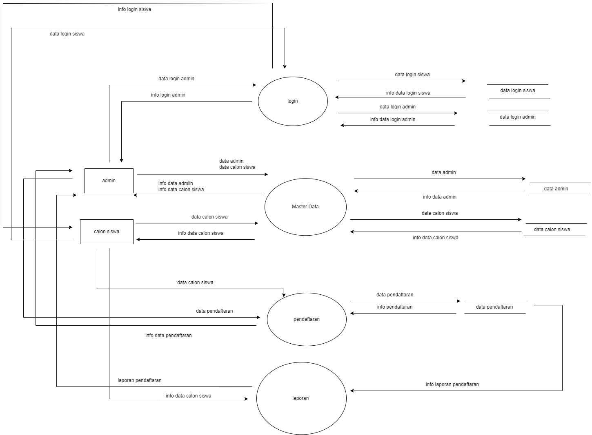Gambar 3. DFD level 1

Gambar 4. DFD level 2

Gambar 5. DFD level 3
Entity Relationship Diagram (ERD) adalah diagram yang dapat mengambarkan relasi antar entitas yang digunakan dalam pembuatan sistem.
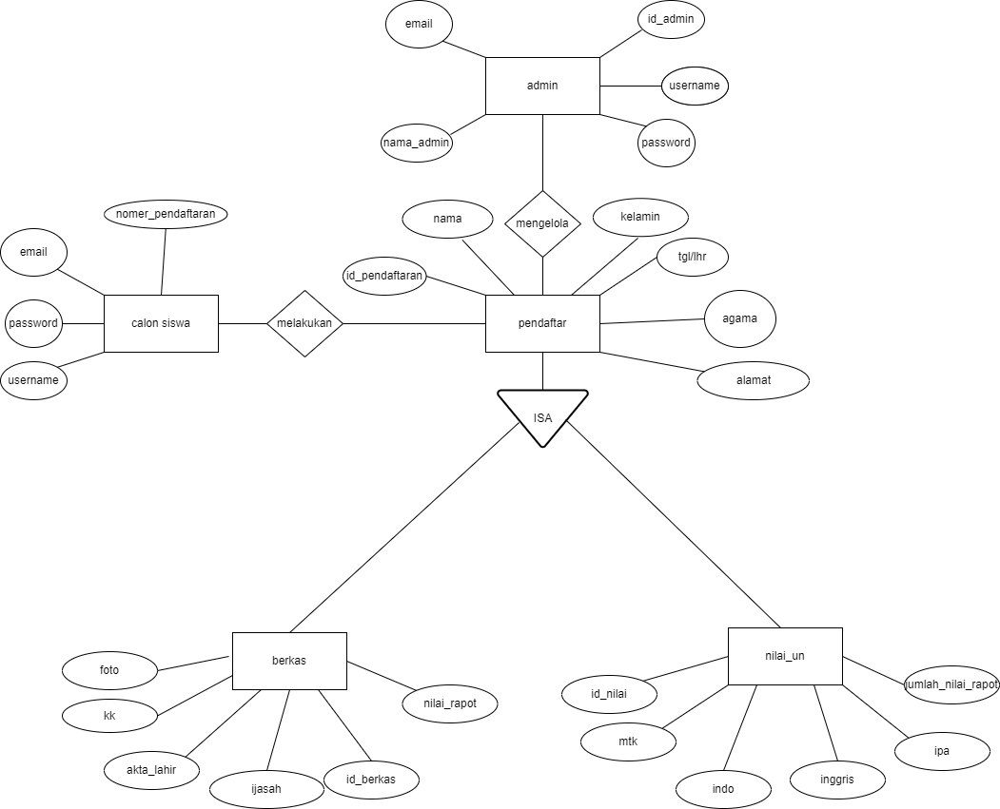ERD
3.3 Design Database

Gambar 7. Tabel User

Gambar 8. Tabel level

Gambar 9. Tabel Pendaftar

Gambar 10. Tabel Berkas

Gambar 11. Tabel Nilai
3.4 Relasi Tabel

Gambar 12. Relasi Tabel
3.5 Desain User Interface
Pada form login, admin akan memasukan Username dan Password yang telah terdaftar didalam database. Jika login berhasil maka admin / calon sisawa dapat mengakses website.

Gambar 13 Halaman Login
Pada halaman daftar disini calon siswa yang belum memiliki akun bisa mendaftar terlebih dahulu.

Gambar 14. Halaman Daftar Akun
Pada halaman home calon siswa pat melihat informasi pengumuman dan visi misi sekolah dan bisa melakukan pendaftaran dengan mengklik tombol daftar.

Gambar 15. Halaman Home
Berikut adalah tampilan halaman daftar.

Gambar 16. Halaman Daftar
Pada form login, admin akan memasukan Username dan Password yang telah terdaftar didalam database. Jika login berhasil maka admin sisawa dapat mengakses website.

Gambar 17. Halaman Home Admin
Admin dapat mengelola data siswa dengan cara mengkonfirmasi penerimaan atau penolakan

Gambar 18. Halaman Monitoring Admin
BAB IV
IMPLEMENTASI KODE PROGRAM
Berikut ini adalah tahapan penerapan kode program untuk membangun aplikasi berbasis web dan tampilan dari halaman web dari aplikasi yang dibuat.
4.1 Form Registrasi
Pertama adalah membuat Form Registrasi untuk mendaftarkan pengguna, pada kode
programnya dibuat form dengan tag Form yang berisi Username, Email, Password dan Button
Register yang jika di tekan maka pengguna telah berhasil membuat akun kemudian diarahkan
menuju Form Login.
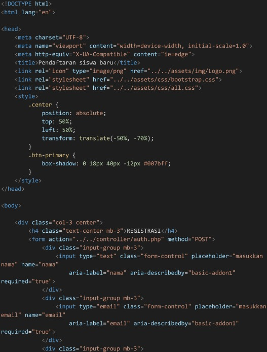
Gambar 19. Source Code Halaman Registrasi
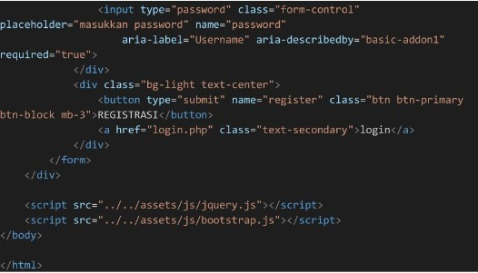
Gambar 20. Source Code Halaman Registrasi
Tampilan Halaman Registrasi
4.2 Form Login
Selanjutnya adalah membuat halaman login. setelah melakukan registrasi pengguna
dapat melakukan login ke dalam sistem pendaftaran. untuk bisa login pengguna diminta
menginputkan email dan password.setelah berhasil login pengguna diarahkan pada halaman
Beranda.
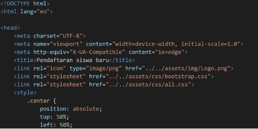
Gambar 21. Source Code Halaman Form Login
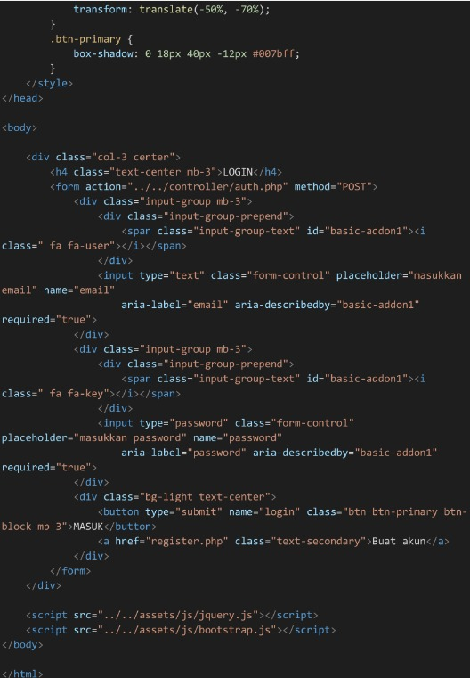
Gambar 22. Source Code Halaman Form Login
Tampilan Halaman Login
4.3 Halaman Beranda
Pada halaman Beranda calon siswa dapat melihat informasi pengumuman dan visi misi sekolah selain itu calon siswa bisa melakukan pendaftaran dengan mengklik tombol daftar.
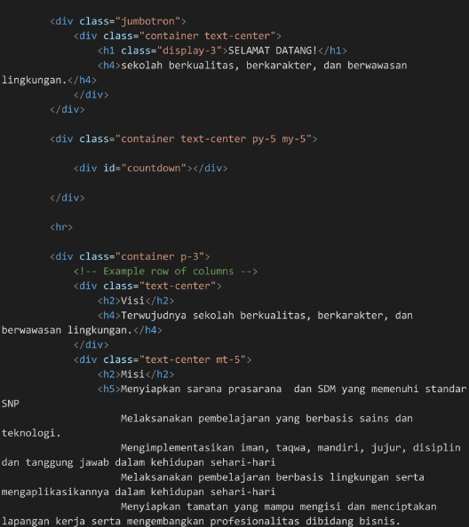
Gambar 23. Source Code Halaman Beranda
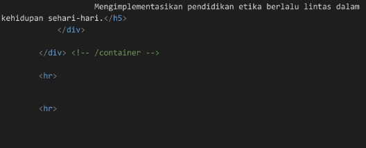
Gambar 24. Source Code Halaman Beranda
Tampilan Halaman Beranda
4.4 Halaman Pendaftaran
Pada halaman ini calon siswa diminta menginputkan data dirinya guna melengkapi data
pendaftaran di smp pancasila. Data yang diminta seperti nama, alamat, jenis kelamin, rata rata
nilai, serta juga data pendukung seperti ijazah, kartu keluarga.
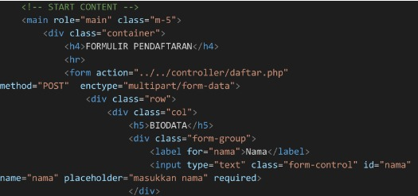
Gambar 25. Source Code Halaman Pendaftaran
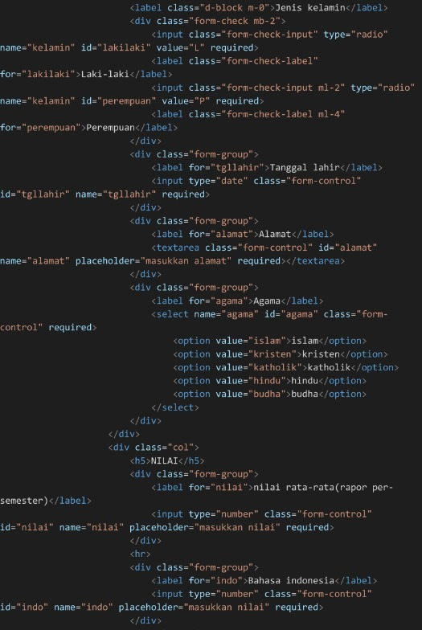
Gambar 26. Source Code Halaman Pendaftaran
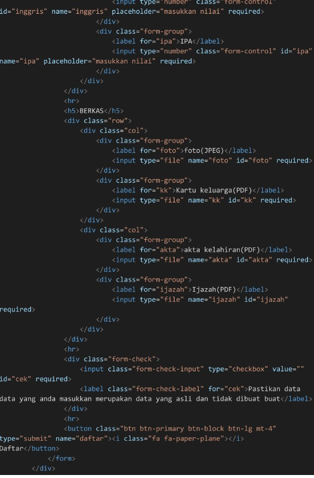
Gambar 27. Source Code Halaman Pendaftaran
Tampilan Halaman Pendaftaran
4.5 Halaman Beranda Admin
Setelah melakukan login dengan akun admin akan diarahkan pada halaman beranda admin yang berisi informasi pengumuman dan visi misi sekolah .
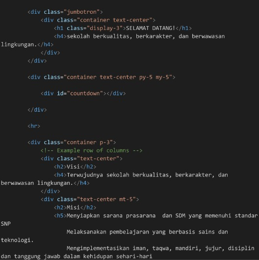
Gambar 28. Source Code Halaman Beranda Admin
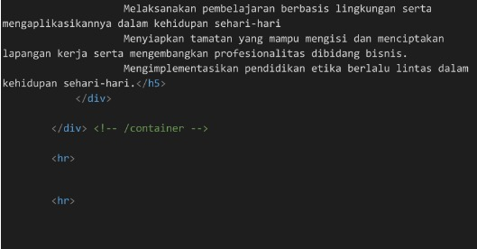
Gambar 29. Source Code Halaman Beranda Admin
Tampilan Halaman Beranda Admin
4.6 Halaman Monitoring Admin
Padahalaman ini admin mempunyai akses untuk menerima pendaftaran ataupun menolak pendaftaran yang diajukan oleh calon siswa.
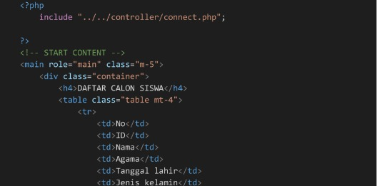
Gambar 30. Source Code Halaman Monitoring Admin
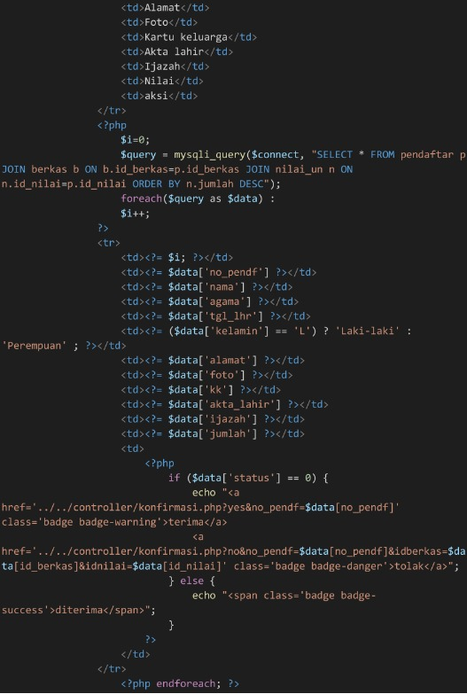
Gambar 31. Source Code Halaman Monitoring Admin
Tampilan Halaman Beranda Monitoring